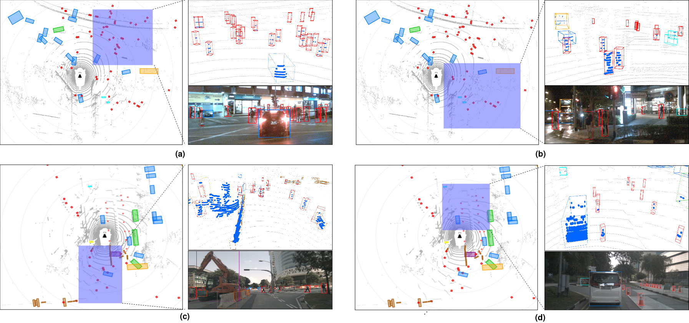
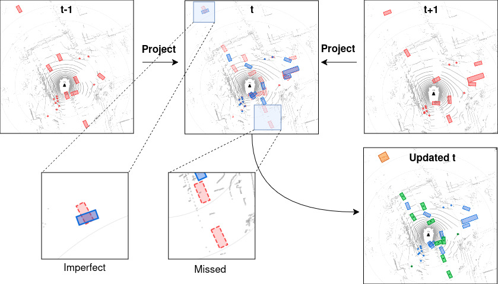

Abstract
LiDAR-based 3D object detection is fundamental to autonomous driving thanks to its ability to measure the real scale of the environment. Yet traditional detectors are confined to closed-set vocabularies defined by available labeled datasets, making them unable to identify novel objects and guarantee safe real-world operation. Open-vocabulary 3D detection addresses this limitation by leveraging 2D vision-language models to generate 3D pseudo-labels offline for training conventional detectors. However, existing methods rely on iterative optimization for 3D box fitting, which is computationally expensive and unreliable for sparse objects where few LiDAR points provide weak optimization signals. To overcome this challenge, we present MSAF, a Multi-Stage Analytical Fitting framework that generates 3D pseudo-labels from 2D open-vocabulary detections and LiDAR point clouds without iterative optimization. MSAF extracts per-object point clusters from multi-camera data and merges fragmented observations across camera boundaries, then estimates orientation, center, and size through closed-form geometric fitting, refines boxes for partial visibility, and propagates detections across frames via temporal fusion. On nuScenes, MSAF achieves 32.2% mAP pseudo-label quality at 0.38 s/sample, 72× faster than optimization baselines, and trains a detector to 31.4% mAP, surpassing prior methods.
Demo
Surround-view 3D detections (6 cameras + BEV) on nuScenes mini. Full resolution.
Qualitative Results

Temporal Fusion
Boxes detected at adjacent frames are projected into the current frame via ego-motion compensation. Unmatched projections are recovered as missed detections; overlapping far-range boxes are merged via union expansion.

Results
Pseudo-label quality (nuScenes mini, 323 samples)
| mAP | NDS | mATE | mASE | mAAE | Speed |
|---|---|---|---|---|---|
| 32.2% | 31.2% | 0.523 | 0.445 | 0.521 | 0.38 s/sample |
Downstream detection (nuScenes val, all 10 classes novel)
| Method | Detector | mAP | NDS | Ped | Bicycle | Cone | Bus | CV |
|---|---|---|---|---|---|---|---|---|
| OpenSight | TransFusion-L | 22.9 | 24.8 | 52.2 | 11.1 | 36.5 | 15.2 | 3.2 |
| OV-SCAN | TransFusion-L | 31.1 | 35.3 | 60.2 | 27.1 | 32.5 | 22.1 | 7.3 |
| MSAF (ours) | CenterPoint | 31.4 | 30.1 | 65.2 | 35.4 | 43.1 | 25.9 | 10.9 |